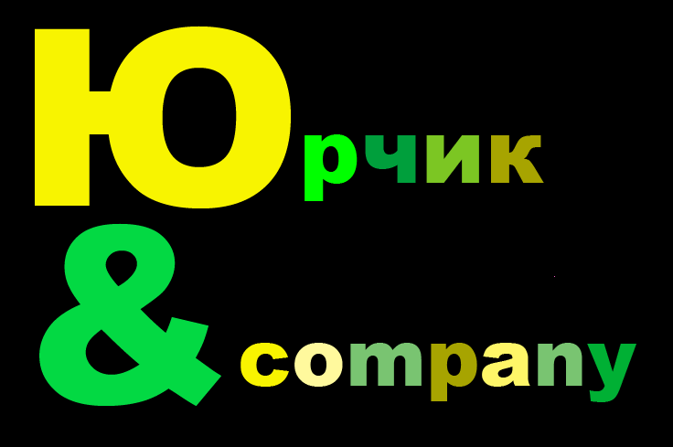

Юрчик & К°

Нашими партнерами є корпорація «Електрон». Компанія «Електрон» є виробником сучасного пасажирського електротранспорту – трамваїв, тролейбусів та електробусів.
Завод «Електрон» був заснований в 1918 році. Майстерня була облаштована по останньому слову тодішньої техніки.
Варто зазначити що найпершим був виготовлений телевізор. Сучасний «Електрон» активно розвивається як машинобудівна корпорація.
Для розвитку нашої компанії завод «Електрон» погодився виконати наше замовлення яке складається з 4-ох електробусів та 4-ох тролейбусів.
Електробус – це екологічний міський транспорт нового покоління, проилад національного використання для пасажирських перевезень дешевої електроенергії.
Пробіг електробуса без підзарядки тягових акумуляторів до 300км.
Акумулятори електробуса безпечні в експлуатації і мають великий ресурс (від 5000 до 8000 циклів «заряд-розряд» залежно від умов експлуатації та обслуговування).
Бортовий зарядний пристрій забезпечує зарядку батареї від мережі 380В Завдяки низьким експлуатаційним витратам, відсутності шкідливих вихлопів, простоті техобслуговування електробуси є найбільш перспективним видом пасажирського транспорту в умовах сучасного міста.
Крім того, на відміну від трамваїв і тролейбусів, вони не потребують ні рейок, ні контактної мережі з підстанціями.
Тролейбус «Електрон» - це повністю низько підлоговий електротранспорт підвищеної комфортності з наявністю місць для інвалідів.
Загальна місткість салону тролейбуса понад 100 пасажирів, його довжина понад 12 метрів.
Головною особистістю тролейбуса є його можливість автономного ходу, тобто без контактної мережі на відстань до 3км.
Для зручності посадки і висадки пасажирів у тролейбусі застосовано кнілінг, завдяки якій тролейбус на зупинці громадського транспорту опускається в сторону дверей, зменшуючи дорожній просвіт (кліренс).
Для осіб з обмеженими можливостями салон тролейбуса обладнаний сигнальними кнопками та відкидним пандусом для заїзду інвалідного візка на спеціально пристосоване місце з пасками безпеки для їх фіксації під час руху